Links
Links are used to display a hyperlink in DynaForms. Set the URL (web address) where the link will redirect in the property Href. If necessary, add a hint of where the link redirects to in the property hint. Finally, add a value to the link in the property value.
The icon of this element inside the designer is the following
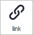
To add a link to the design of the DynaForm, drag and drop it onto any of the existing rows.
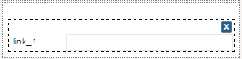
Set the URL to which the link will redirect inside its properties.

Properties
The following are the properties available for this control. To access them, click on the control after adding it to the design.
| Property | Description |
|---|---|
| Type | link (readonly) |
| ID | [Required] Field and HTML unique identifier. |
| Name | HTML field name |
| Label | The label of the field with which the control will be renderized. |
| Display text | The text that is display as link (blue and underline). |
| href | [Required] Set in this property the default href value that will be shown and stored when using the link. |
| Hint | Used to show help when the link control is rendered. It is shown when the pointer of the mouse is hovered over the ? icon. |
Note: Follow the link of the properties to learn how to work with each one of them.
The behavior of the control, as well as its scope, is defined in its properties. For example, if setting the following:
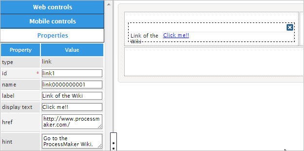
The property "Type" is set by default indicating the type of control which in this case is "Link". The property "ID" is also set by default with the format "link000000000#" where # represents the numbering of link controls added to the design starting in 1. When working with JavaScript in the form, the control can be referenced using this ID (for example $("#link0000000001")...). The same happens with the property "Name" which has the same format as the ID property.
The property "Label" sets the label of the control which will be the following part when rendering:
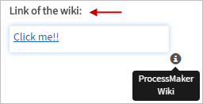
The property "Value" sets the text of the href property which will be clicked by the user in order to open the link. Those properties are directly related one to another.
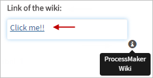
The "Hint" property will display helpful hints of the link field in the form
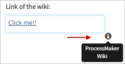
The Href Property
This property sets the address for a link. When the link is clicked, the web browser will open a new tab or window (depending on the configuration of the web browser) that directs to that address.

If an address doesn't have a protocol, such as https:// or ftp://, then http:// is automatically prepended to the address, so an address such as www.processmaker.com becomes http://www.processmaker.com .
Up to ProcessMaker 3.2.2, if relative addresses are used such as http://<DOMAIN> /sys<WORKSPACE> /<LANG> /<SKIN>/login/login, then it is recommended to use JavaScript to set the href property of the link.
When rendering the Dynaform in the preview or running a case, the text in blue color will be the link to the URL specified in this property. Users must click on them to open the web page.

Any type of URL can be used, such as:
httpExample:http://www.example.com/httpsExample:https://en.wikipedia.orgmailtoExamplemailto: silvia.alvarado@processmaker.comftpExampleftp://192.168.1.20
Also, IP addresses can be added in this property such as 127.0.0.1, http://192.168.1.77, etc.
Dynamically Assigning Links to the Control
The property "Href" of the link can also be retrieved from a case variable using the @@ prefix. For example, if having a form in which a url is entered in a text box related to a variable such as @@linkVariable:
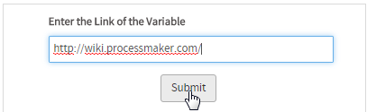
Then, in the other form, this value is retrieved just setting the value @@linkVariable in the href property:
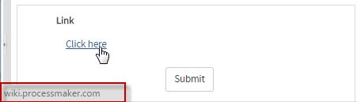
It is also possible to dynamically redirect pages using case variables in the JavaScript code. For example:
- Create the case variable
hrefRedirect - Create a new trigger and set the url where the page will be redirected using the code
@@hrefRedirect = "http://www.processmaker.com";
- Assign the trigger before the Dynaform in the steps of the task.
Add the name of the variable in the "Href" property of the Dynaform:
@@hrefRedirect.Or add the following JavaScript code to open the url in a new page:
javascript: window.open('@#href', '_blank');Note: Take into account the Typing Rules of case variables to use them in the code.
- Run a case and click on the link of the Dynaform. Another tab will open and will redirect to the home page of ProcessMaker.
Link Control Example
For this example, drag and drop a "Link" control into the Dynaform canvas. The result of adding the control will be the following.
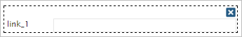
Click on the empty space of the control to display its properties on the left side panel under the "Web Controls" tab.
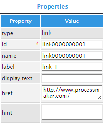
The first property is the "id" property which is the unique identifier of the control. For this example, the "id" property will be used with JavaScript code to add functionality and behavior to the control.
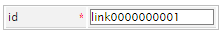
For this, click on the light gray border of the Dynaform (which is the space outside the controls) to display the properties of the Dynaform on the left hand panel. Go to the "javascript" property which has an "edit" button that will open a JavaScript editor.

On the editor, add the following code that will set the link text:
Notice that the "id" is being used in the query to set the value in the control. The "id" property can have a different name instead of "link0000000001".
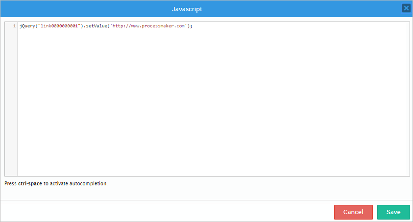
If rendered at this point the control will show nothing, therefore the "display text" property must have a name appropriate for the link. For example, the text added in the "display text" property can be: "Click here". When rendered the control will have the text added and will lead to the link placed on the JavaScript code.
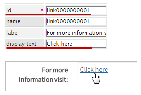
The "name" property is an HTML field name reference to the control.
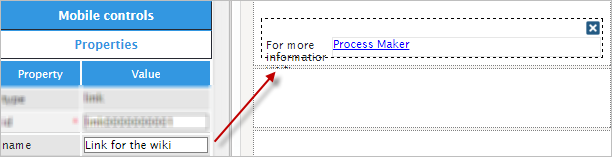
Now, the "label" property will change the name of the control. Instead of having "link_1" the name of the control can be: "For more information visit". Observe the image below.

The "display text" property shows the text which is displayed as link (blue and underline) as seen in the image below.
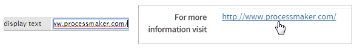
The following property is the "hint" property. Used to show help when the link control is rendered. Display the hint by hovering the pointer of the mouse over the ? icon. In this case the hint can be: "Click on the link for more information.".
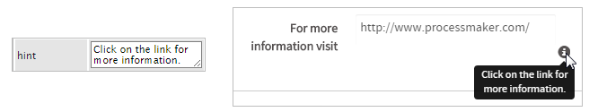
Finally, the "href" property is the link that will redirect the user to the specific page. Use the "display text" property to display text according to the link added in the "href" property as seen in the image below.
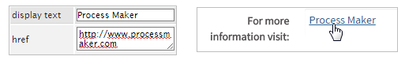
Linking inside ProcessMaker
| Note: Remember that the user accessing these links must have the proper permissions to access the Case, Task, Input Document or Output Document referred on the link. Furthermore, Steps can only be accessed from the same task. |
Relative links can be used when linking to another page inside ProcessMaker. See the G::header() function and how to call this internal function for an explanation of the different GET variables to pass in the following links:
- The login screen:
http://<DOMAIN>/sys<WORKSPACE>/<LANG>/<SKIN>/login/login - The Home Section:
http://<DOMAIN>/sys<WORKSPACE>/<LANG>/<SKIN>/cases/main - The cases list:
http://<DOMAIN>/sys<WORKSPACE>/<LANG>/<SKIN>/cases/casesListExtJs - Start a new case:
http://<DOMAIN>/sys<WORKSPACE>/<LANG>/<SKIN>/cases/cases_New - Open an existing case without menu and sidebar:
http://<DOMAIN>/sys<WORKSPACE>/<LANG>/<SKIN>/cases/cases_Open?APP_UID=<CASE-UID>&DEL_INDEX=<INDEX> - Open an existing case with menu and sidebar (version 3.0.1.8 and later):
http://<DOMAIN>/sys<WORKSPACE>/<LANG> /<SKIN>/cases/opencase/<CASE-UID> - Open the Case Summary:
http://<DOMAIN>/sys<WORKSPACE>/<LANG>/<SKIN>/cases/cases_Open?APP_UID=<CASE-UID>&DEL_INDEX=<INDEX>&action=sent
- To open a step in the same task:
http://<DOMAIN>/sys<WORKSPACE>/<LANG>/<SKIN>/cases/cases_Step?TYPE=<TYPE>&UID=<OBJECT-UID>&POSITION=<STEP-NUMBER>&ACTION=<ACTION>
- DynaForm step:
- For editing:
http://<DOMAIN>/sys<WORKSPACE>/<LANG>/<SKIN>/cases/cases_Step?TYPE=DYNAFORM&UID=<OBJECT-UID>&POSITION=<STEP-NUMBER>&ACTION=EDIT - For viewing:
http://<DOMAIN>/sys<WORKSPACE>/<LANG>/<SKIN>/cases/cases_Step?TYPE=DYNAFORM&UID=<OBJECT-UID>&POSITION=<STEP-NUMBER>&ACTION=VIEW
- For editing:
- Input Document step:
- For attaching:
http://<DOMAIN>/sys<WORKSPACE>/<LANG>/<SKIN>/cases/cases_Step?TYPE=INPUT_DOCUMENT&UID=<OBJECT-UID>&POSITION=<STEP-NUMBER>&ACTION=ATTACH
- For attaching:
- Output Document step:
- For generating and viewing:
http://<DOMAIN>/sys<WORKSPACE>/<LANG>/<SKIN>/cases/cases_Step?TYPE=OUTPUT_DOCUMENT&UID=<OBJECT-UID>&POSITION=<STEP-NUMBER>&ACTION=GENERATE
- For generating and viewing:
-
External step:
http://<DOMAIN>/sys<WORKSPACE>/<LANG>/<SKIN>/cases/cases_Step?TYPE=EXTERNAL&UID=<EXT-STEP-UID>&POSITION=<STEP-NUMBER>&ACTION=EDIT -
Notification (Email):
"http://<DOMAIN>/sys<WORKSPACE>/<LANG>/<SKIN>/cases/cases_Step?TYPE=MESSAGE&UID=<OBJECT-UID>&POSITION=<STEP-NUMBER>&ACTION= -
End of task for routing:
http://<DOMAIN>/sys<WORKSPACE>/<LANG>/<SKIN>/cases/cases_Step?TYPE=ASSIGN_TASK&UID=-1&POSITION=10000&ACTION=ASSIGN
- DynaForm step:
-
Reassign a case to another user:
http://<DOMAIN>/sys<WORKSPACE>/<LANG>/<SKIN>/cases/cases_Reassign?APP_UID=<CASE-UID>&DEL_INDEX=<INDEX>
-
Open a particular Input Document file:
- Latest version:
http://<DOMAIN>/sys<WORKSPACE>/<LANG>/<SKIN>/cases/cases_ShowDocument?a=<APP-DOC-UID> - Specified version:
http://<DOMAIN>/sys<WORKSPACE>/<LANG>/<SKIN>/cases/cases_ShowDocument?a=<APP-DOC-UID>&v=<VERSION-NUMBER>
- Latest version:
-
Open a generated Output Document:
- Lastest Version:
http://<DOMAIN>/sys<WORKSPACE>/<LANG>/<SKIN>/cases/cases_ShowOutputDocument?a=<APP-DOC-UID>&ext=<EXTENSION>
- Specified Version:
http://<DOMAIN>/sys<WORKSPACE>/<LANG>/<SKIN>/cases/cases_ShowOutputDocument?a=<APP-DOC-UID>&ext=>EXTENSION>&v=<VERSION-NUMBER>
- Lastest Version:
-
Open a public file:
http://<DOMAIN>/sys<WORKSPACE>/<LANG>/<SKIN>/<PROCESS-UID>/<FILENAME>
- Label: The text displayed above or to the left of the link, which identifies it.
- Value: The hyperlink reference, which is the link's URL (address), where the web browser is directed when the user clicks on the link.
- Text: The text displayed for the link.
- Href: The hyperlink reference, which is the link's URL (address), where the web browser is directed when the user clicks on the link.
JavaScript in Links
To learn how to manipulate Dynaform controls using JavaScript, see JavaScript in DynaForms.
Links in ProcessMaker have the following field components:
JavaScript Methods
Some of the JavaScript methods to manipulate images include:
| Method | Description |
|---|---|
jQuery("#fieldID").getValue() |
Returns the URL (address) where the link directs when clicked. |
jQuery("#fieldID").getText() |
Returns the text displayed for the link. |
jQuery("#fieldID").getLabel() |
Returns the field's label, which is the text displayed above or to the left of the field to identify it. |
jQuery("#fieldID").getHref() |
Returns the URL (address) where the link directs when clicked. |
jQuery("#fieldID").setValue("newText") |
Sets the URL (address) where the link directs when clicked. |
jQuery("#fieldID").setText("newText") |
Sets the text displayed for the link. |
jQuery("#fieldID").setLabel("newLabel") |
Sets the field's label, which is the text displayed above or to the left of the field to identify it. |
jQuery("#fieldID").setHref("URL") |
Sets the URL (address) where the link directs when clicked. |
To see code examples for these methods, see JavaScript Functions and Methods.
Executing JavaScript in Links
Until ProcessMaker 3.2.2, the "href" property of links can be set with the setHref() method. However, this method automatically adds "http://" if it lacks a protocol, which is a problem if trying to execute JavaScript code in a link. To get around this problem, use standard jQuery to set the "href" property:
For example, a Dynaform has a link with the ID "clientLink". When that link is clicked it should execute a custom JavaScript function named redirectPage(), which had code to first call saveForm() to save the current contents of the Dynaform and then set the location to redirect to a Dynaform in the same task whose UID is "95038966757f286de4cc9f6008453249" and whose step position is 2.
In order to redirect to another step in a task, the redirection has to occur within the same frame as the current Dynaform, so the target property of the link is changed from "_blank" (which opens a new window or tab) to "".
$("#clientLink").find("a").prop("target", "");
function redirectPage() {
$("form").saveForm(); //save the contents of the Dynaform before redirection
location="../cases/cases_Step?TYPE=DYNAFORM&UID=95038966757f286de4cc9f6008453249&POSITION=2&ACTION=EDIT";
}
Setting Relative Links
Until ProcessMaker 3.2.2, by default, Link controls prepend "http://" when using the setHref() method. If needing to use a relative link, such as ../login/login which doesn't contain the full address, then search for the "a" tag inside a link's div and use jQuery's .prop() method to set its "href" property to the relative address.
For example, the following JavaScript code redirects the web browser to the relative address ..login/login in a new tab or window (depending on the configuration of the web browser):
Manipulating Links in Triggers
ProcessMaker 3 does not allow variables to be associated with link fields, like other fields, so the value of a link can't be set through its associated variable. However, the href and displayed text properties of a link field can be set with variables. In the Dynaform Designer, click on the link field and place variables in the properties.
In this example, the @@productName variable is placed in the link's displayed text property and the @@productUrl variable is placed in the link's href property.
If the @@productName and @@productUrl variables are set at some prior point in the case, then the link field will contain the values in the variables. The @@productName and @@productUrl variables can be set by fields in a prior Dynaform, or they can be set with PHP code in a trigger.
For example, the following trigger code can be used to set the @@productName and @@productUrl variables:
@@productName = '3cm flanged sprocket';
@@productUrl = 'http://www.toolworld.com/products/3cm_flanged_sprocket.html';
}
else {
@@productName = '20mm lug nut';
@@productUrl = 'http://www.toolworld.com/products/20mm_lug_nut.html';
}